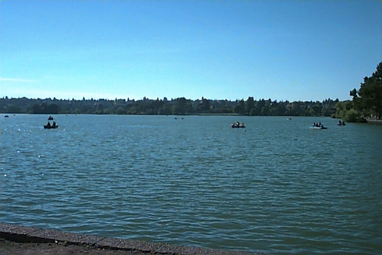
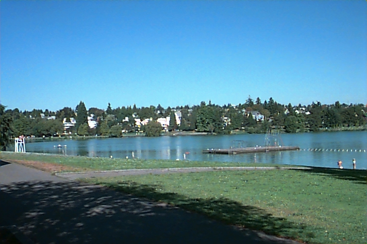
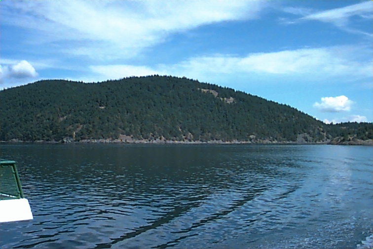
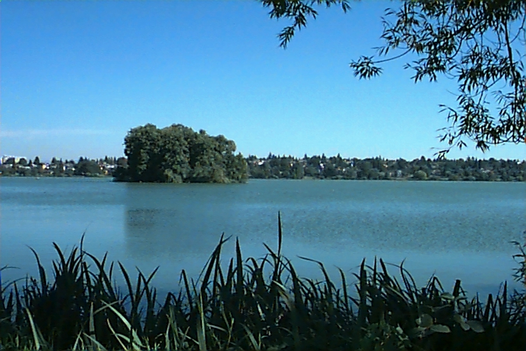
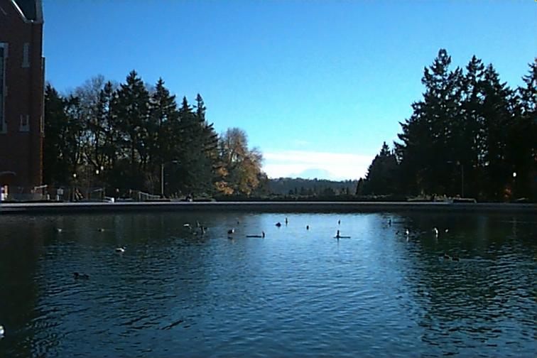
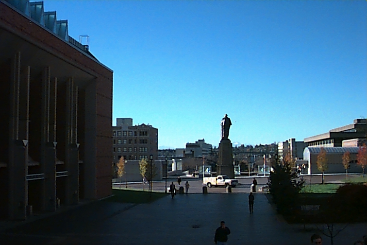

image id: 649 distance: 0.0
image id: 398 distance: 70575.89041592037
image id: 373 distance: 72273.71920691503
image id: 625 distance: 72378.2230232271
image id: 649 distance: 0.0
image id: 625 distance: 0.4319517930629042
image id: 398 distance: 0.44209551104392375
image id: 380 distance: 0.44789567061392455
image id: 649 distance: 0.0
image id: 373 distance: 37687.32822278312
image id: 380 distance: 41773.20945538952
image id: 398 distance: 41773.86687667207
image id: 649 distance: 0.0
image id: 151 distance: 61333.25738944574
image id: 373 distance: 62019.97958722657
image id: 143 distance: 78027.75436983946
image id: 649 distance: 0.0
image id: 151 distance: 0.30228542034097594
image id: 373 distance: 0.30295991853531534
image id: 380 distance: 0.3538438523557571
image id: 649 distance: 0.0
image id: 380 distance: 374562.0
image id: 398 distance: 379498.0
image id: 625 distance: 382958.0